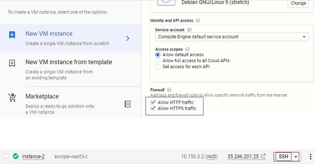

Many people pay extra to get hosting tailored to run CMS like WordPress from their provider, in my case I want to create everything from scratch in order to have the maximum control on it. First of all Google Cloud is an amazing and simple platform that allows you to create and set-up a VM instance and run a different particular kind of server. In my case, I have chosen to run a LAMP web server because is based on Linux OS (Debian), Apache, MySQL and PHP and where a CMS WordPress platform will run. Google also provides a very define guideline really simple to follow if you have a basic understanding of technologies involved and Google gives to you an extensive trial period, Gmail is required link: https://cloud.google.com/
On the left of your screen highlighted with red, you can find a way to set up your fist Instance You should set name of the instance, region, zone, machine type I’ve chosen the small one. Make sure to allow HTTP and HTTPS traffic.  Now we can see that our instance has been created, we can test it and check if it works via SSH. To run the VM running for the first time with the command: sudo passwd root and set the root password.
Now we have to promote our IP in order for it to be reached externally, as to print screen View network details In VCP network and under External IP addresses we can switch the IP from Ephemeral to Static. Now we can reserver the static IP, regarding the name is up to you, description is optional. As we can see below StaticIP is set and used by our instance.
To install Apache you can run the simple command below:
sudo apt-get update && sudo apt-get install apache2 -y
While installing apache we have to enable the mode rewrite with the command:sudo a2enmod rewrite
sudo systemctl restart apache2
we can check the apache status:sudo systemctl status apache2
Now finally we can click on external link and check if it works: You should remove the letter ‘S’ It only works when we remove the ‘S’ because we have any certification SSL set. Don’t panic if it does not work, insure that issue with firewall is set: For firewall I will link here at Google guideline
I have already bought a domain in GoDaddy but you can buy where you want.
We have to create a zone in Network services and go to Cloud DNS
 In Zone name you can write a name of your choice (It should be unique),DNS name
should match the name of
your domain.
Now we have to Add record set
Now it is very Important, to insert external IP in IPv4 of our instance and click create.
We have to do the same inAdd record set and setting domain address with www like on
print screen below,
IPv4 it’s the
same as previous one.
Here we go, the big picture how it should look like.
Now we can configure our name server in GoDaddy , on the left you can see name of the server
provided by Google, on the
right side we have to add it on the platform located in GoDaddy.
Sometime this configuration can take quite a bit of time before it’s ready, but we can check it with
the website
dnschecker.org to understand how is the status of spreading our
DNS around the world.
In Zone name you can write a name of your choice (It should be unique),DNS name
should match the name of
your domain.
Now we have to Add record set
Now it is very Important, to insert external IP in IPv4 of our instance and click create.
We have to do the same inAdd record set and setting domain address with www like on
print screen below,
IPv4 it’s the
same as previous one.
Here we go, the big picture how it should look like.
Now we can configure our name server in GoDaddy , on the left you can see name of the server
provided by Google, on the
right side we have to add it on the platform located in GoDaddy.
Sometime this configuration can take quite a bit of time before it’s ready, but we can check it with
the website
dnschecker.org to understand how is the status of spreading our
DNS around the world.
Run command:
sudo apt-get install mariadb-server mariadb-client
After that we have to configure the Database with:sudo mysql_secure_installation
After that we can restart:sudo systemctl restart mysql.service
Install PHP sudoapt-get install apache2 php libapache2-mod-php
Now you need install PHP extension for mysql:apt-get install php7.0-mysql
Perform the follow restart:sudo service mysql restart
sudo service apache2 restart
Now to check if PHP is installed correctly we can proceed in this way: We have to create a PHP file for testing if it is working. File name info.php, created in the directory var/www/html command:nano info.php
Insert code:< ?php phpinfo(); ?>
If you want to learn how to navigate in nano environment please link: Basic guide nano Now after our link we have to write info.php [domain]/info.php and result should be as shown on the page below.In order to allow WordPress to work we have to create a database. First of all we have to login with root administration with the command su Access to database with root administrator:
mysql -u root -p
Now we need to create the database command:create database wordpress;
Database needs to have an user command:create user ‘usernameyouwant’@’localhost’ identified by ‘passwordYouWant’;
User created has to be granted to ALL access, command:Grant all privileges on*.* to ‘username‘@’localhost’ identified by ‘password‘;
Below is the summary: We have to refresh the table of privileges just to align it with:flush privileges;
if you want check if database really exists just run:show databases;
if you want to check user is created run:select user from mysql.user group by user;
Now we can exit from MariaDB with the simple command: exit; Now we have to proceed with some restart and enable MySQLsudo systemctl stop mysql.service
sudo systemctl start mysql.service
sudo systemctl enable mysql.service
(If show error message goes ahead, probably is already enabled)sudo systemctl status mysql.service
(Check if status of service is active)Download and unzip wordpress package:
cd /tmp && wget https://wordpress.org/latest.tar.gz
tar -zxvf latest.tar.gz
then we have to move in the proper folder where Apache root document is located.sudo mv wordpress /var/www/html/wordpress
after that I want to move all the file in wordpress folder in htmlmv /var/www/html/wordpress/* /var/www/html
now we have to change the group owner to allow WordPress to work properly.sudo chown -R www-data:www-data /var/www/html
sudo chmod -R 755 /var/www/html
we can remove folder WordPress as it is empty with command run on root:rm -r mydir
Edit file:
sudo nano /var/www/html/wp-config-sample.php
in order to give the same privilege we have to run again this command:sudo chown -R www-data:www-data /var/www/html
sudo chmod -R 755 /var/www/html
IMPORTANT: save file like:wp-config.php For this file also we have to add the same group of previous file: we can run the commands again:sudo chown -R www-data:www-data /var/www/html
sudo chmod -R 755 /var/www/html
Now we can check if our page WordPress is working with: [Domain or external link]/wp-admin in our browser. Here we go, we can proceed with WordPress installation: If you followed this guideline after WordPress configuration it will not work properly, because the Apache will load by default a primary file index.html still, we can just remove it with root access:rm -index.html
and after that ansudo serivce apache2 restart
As per this guideline I never mention the configuration of Apache server but you should be aware of the following: in: cd /etc/apache2/sites-enabled/there is a configuration file related to the root which contains the file of our website. file name is called 000-default.conf In my case I will not change the DocumentRoot because is the right one.